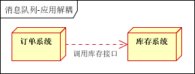
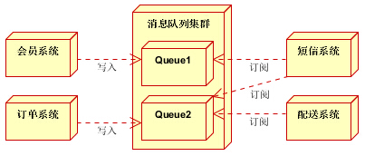
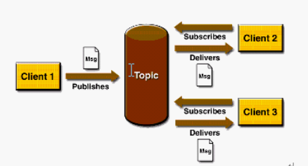

消息队列概述
消息队列中间件是分布式系统中重要的组件，主要解决应用解耦，异步消息，流量削锋等问题，实现高性能，高可用，可伸缩和最终一致性架构。目前使用较多的消息队列有ActiveMQ，RabbitMQ，ZeroMQ，Kafka，MetaMQ，RocketMQ
消息队列应用场景
以下介绍消息队列在实际应用中常用的使用场景。异步处理，应用解耦，流量削锋，日志处理和消息通讯五个场景。
异步处理
场景说明：用户注册后，需要发注册邮件和注册短信。传统的做法有两种 1.串行的方式；2.并行方式
串行方式：将注册信息写入数据库成功后，发送注册邮件，再发送注册短信。以上三个任务全部完成后，返回给客户端。

并行方式：将注册信息写入数据库成功后，发送注册邮件的同时，发送注册短信。以上三个任务完成后，返回给客户端。与串行的差别是，并行的方式可以提高处理的时间

假设三个业务节点每个使用50毫秒钟，不考虑网络等其他开销，则串行方式的时间是150毫秒，并行的时间可能是100毫秒。
因为CPU在单位时间内处理的请求数是一定的，假设CPU1秒内吞吐量是100次。则串行方式1秒内CPU可处理的请求量是7次（1000/150）。并行方式处理的请求量是10次（1000/100）
小结：如以上案例描述，传统的方式系统的性能（并发量，吞吐量，响应时间）会有瓶颈。如何解决这个问题呢？
引入消息队列，将不是必须的业务逻辑，异步处理。改造后的架构如下：
按照以上约定，用户的响应时间相当于是注册信息写入数据库的时间，也就是50毫秒。注册邮件，发送短信写入消息队列后，直接返回，因此写入消息队列的速度很快，基本可以忽略，因此用户的响应时间可能是50毫秒。因此架构改变后，系统的吞吐量提高到每秒20 QPS。比串行提高了3倍，比并行提高了两倍。
应用解耦
场景说明：用户下单后，订单系统需要通知库存系统。传统的做法是，订单系统调用库存系统的接口。如下图：

传统模式的缺点：假如库存系统无法访问，则订单减库存将失败，从而导致订单失败，订单系统与库存系统耦合
如何解决以上问题呢？引入应用消息队列后的方案，如下图：
订单系统：用户下单后，订单系统完成持久化处理，将消息写入消息队列，返回用户订单下单成功
库存系统：订阅下单的消息，采用拉/推的方式，获取下单信息，库存系统根据下单信息，进行库存操作
假如：在下单时库存系统不能正常使用。也不影响正常下单，因为下单后，订单系统写入消息队列就不再关心其他的后续操作了。实现订单系统与库存系统的应用解耦
流量削锋
流量削锋也是消息队列中的常用场景，一般在秒杀或团抢活动中使用广泛。
应用场景：秒杀活动，一般会因为流量过大，导致流量暴增，应用挂掉。为解决这个问题，一般需要在应用前端加入消息队列。
- 可以控制活动的人数
- 可以缓解短时间内高流量压垮应用

用户的请求，服务器接收后，首先写入消息队列。假如消息队列长度超过最大数量，则直接抛弃用户请求或跳转到错误页面。
秒杀业务根据消息队列中的请求信息，再做后续处理
日志处理
日志处理是指将消息队列用在日志处理中，比如Kafka的应用，解决大量日志传输的问题。架构简化如下
日志采集客户端，负责日志数据采集，定时写受写入Kafka队列
Kafka消息队列，负责日志数据的接收，存储和转发
日志处理应用：订阅并消费kafka队列中的日志数据
消息通讯
消息通讯是指，消息队列一般都内置了高效的通信机制，因此也可以用在纯的消息通讯。比如实现点对点消息队列，或者聊天室等
点对点通讯：

客户端A和客户端B使用同一队列，进行消息通讯。聊天室通讯：

客户端A，客户端B，客户端N订阅同一主题，进行消息发布和接收。实现类似聊天室效果。
以上实际是消息队列的两种消息模式，点对点或发布订阅模式。模型为示意图，供参考。
消息中间件示例
电商系统

消息队列采用高可用，可持久化的消息中间件。比如Active MQ，Rabbit MQ，Rocket Mq。
（1）应用将主干逻辑处理完成后，写入消息队列。消息发送是否成功可以开启消息的确认模式。（消息队列返回消息接收成功状态后，应用再返回，这样保障消息的完整性）
（2）扩展流程（发短信，配送处理）订阅队列消息。采用推或拉的方式获取消息并处理。
（3）消息将应用解耦的同时，带来了数据一致性问题，可以采用最终一致性方式解决。比如主数据写入数据库，扩展应用根据消息队列，并结合数据库方式实现基于消息队列的后续处理。
日志收集系统

分为Zookeeper注册中心，日志收集客户端，Kafka集群和Storm集群（OtherApp）四部分组成。
Zookeeper注册中心，提出负载均衡和地址查找服务
日志收集客户端，用于采集应用系统的日志，并将数据推送到kafka队列
Kafka集群：接收，路由，存储，转发等消息处理
Storm集群：与OtherApp处于同一级别，采用拉的方式消费队列中的数据
JMS消息服务
讲消息队列就不得不提JMS 。JMS（JAVA Message Service，java消息服务）API是一个消息服务的标准/规范，允许应用程序组件基于JavaEE平台创建、发送、接收和读取消息。它使分布式通信耦合度更低，消息服务更加可靠以及异步性。
在EJB架构中，有消息bean可以无缝的与JM消息服务集成。在J2EE架构模式中，有消息服务者模式，用于实现消息与应用直接的解耦。
消息模型
在JMS标准中，有两种消息模型P2P（Point to Point）,Publish/Subscribe(Pub/Sub)。
P2P模式

P2P模式包含三个角色：消息队列（Queue），发送者(Sender)，接收者(Receiver)。每个消息都被发送到一个特定的队列，接收者从队列中获取消息。队列保留着消息，直到他们被消费或超时。
P2P的特点：
每个消息只有一个消费者（Consumer）(即一旦被消费，消息就不再在消息队列中)
发送者和接收者之间在时间上没有依赖性，也就是说当发送者发送了消息之后，不管接收者有没有正在运行，它不会影响到消息被发送到队列
接收者在成功接收消息之后需向队列应答成功
如果希望发送的每个消息都会被成功处理的话，那么需要P2P模式。
Pub/Sub模式

包含三个角色主题（Topic），发布者（Publisher），订阅者（Subscriber） 多个发布者将消息发送到Topic，系统将这些消息传递给多个订阅者。
Pub/Sub的特点：
每个消息可以有多个消费者
发布者和订阅者之间有时间上的依赖性。针对某个主题（Topic）的订阅者，它必须创建一个订阅者之后，才能消费发布者的消息
为了消费消息，订阅者必须保持运行的状态
为了缓和这样严格的时间相关性，JMS允许订阅者创建一个可持久化的订阅。这样，即使订阅者没有被激活（运行），它也能接收到发布者的消息。
如果希望发送的消息可以不被做任何处理、或者只被一个消息者处理、或者可以被多个消费者处理的话，那么可以采用Pub/Sub模型。
消息消费
在JMS中，消息的产生和消费都是异步的。对于消费来说，JMS的消息者可以通过两种方式来消费消息。
- 同步：订阅者或接收者通过receive方法来接收消息，receive方法在接收到消息之前（或超时之前）将一直阻塞；
- 异步：订阅者或接收者可以注册为一个消息监听器。当消息到达之后，系统自动调用监听器的onMessage方法。
JNDI：Java命名和目录接口,是一种标准的Java命名系统接口。可以在网络上查找和访问服务。通过指定一个资源名称，该名称对应于数据库或命名服务中的一个记录，同时返回资源连接建立所必须的信息。
JNDI在JMS中起到查找和访问发送目标或消息来源的作用。
常用消息队列
一般商用的容器，比如WebLogic，JBoss，都支持JMS标准，开发上很方便。但免费的比如Tomcat，Jetty等则需要使用第三方的消息中间件。本部分内容介绍常用的消息中间件（Active MQ,Rabbit MQ，Zero MQ,Kafka）以及他们的特点。
ActiveMQ
ActiveMQ 是Apache出品，最流行的，能力强劲的开源消息总线。ActiveMQ 是一个完全支持JMS1.1和J2EE 1.4规范的 JMS Provider实现，尽管JMS规范出台已经是很久的事情了，但是JMS在当今的J2EE应用中间仍然扮演着特殊的地位。
ActiveMQ特性如下：
⒈ 多种语言和协议编写客户端。语言: Java,C,C++,C#,Ruby,Perl,Python,PHP。应用协议： OpenWire,Stomp REST,WS Notification,XMPP,AMQP
⒉ 完全支持JMS1.1和J2EE 1.4规范 （持久化，XA消息，事务)
⒊ 对Spring的支持，ActiveMQ可以很容易内嵌到使用Spring的系统里面去，而且也支持Spring2.0的特性
⒋ 通过了常见J2EE服务器（如 Geronimo,JBoss 4,GlassFish,WebLogic)的测试，其中通过JCA 1.5 resource adaptors的配置，可以让ActiveMQ可以自动的部署到任何兼容J2EE 1.4 商业服务器上
⒌ 支持多种传送协议：in-VM,TCP,SSL,NIO,UDP,JGroups,JXTA
⒍ 支持通过JDBC和journal提供高速的消息持久化
⒎ 从设计上保证了高性能的集群，客户端-服务器，点对点
⒏ 支持Ajax
⒐ 支持与Axis的整合
⒑ 可以很容易得调用内嵌JMS provider，进行测试
Kafka
Kafka是一种高吞吐量的分布式发布订阅消息系统，它可以处理消费者规模的网站中的所有动作流数据。 这种动作（网页浏览，搜索和其他用户的行动）是在现代网络上的许多社会功能的一个关键因素。 这些数据通常是由于吞吐量的要求而通过处理日志和日志聚合来解决。 对于像Hadoop的一样的日志数据和离线分析系统，但又要求实时处理的限制，这是一个可行的解决方案。Kafka的目的是通过Hadoop的并行加载机制来统一线上和离线的消息处理，也是为了通过集群机来提供实时的消费。
Kafka是一种高吞吐量的分布式发布订阅消息系统，有如下特性：
- 通过O(1)的磁盘数据结构提供消息的持久化，这种结构对于即使数以TB的消息存储也能够保持长时间的稳定性能。（文件追加的方式写入数据，过期的数据定期删除）
- 高吞吐量：即使是非常普通的硬件Kafka也可以支持每秒数百万的消息
- 支持通过Kafka服务器和消费机集群来分区消息
- 支持Hadoop并行数据加载
Kafka相关概念：
- Broker:Kafka集群包含一个或多个服务器，这种服务器被称为broker
- Topic:每条发布到Kafka集群的消息都有一个类别，这个类别被称为Topic。（物理上不同Topic的消息分开存储，逻辑上一个Topic的消息虽然保存于一个或多个broker上但用户只需指定消息的Topic即可生产或消费数据而不必关心数据存于何处）
- Partition:Parition是物理上的概念，每个Topic包含一个或多个Partition.
- Producer:负责发布消息到Kafka broker
- Consumer:消息消费者，向Kafka broker读取消息的客户端。
- Consumer Group:每个Consumer属于一个特定的Consumer Group（可为每个Consumer指定group name，若不指定group name则属于默认的group）。
一般应用在大数据日志处理或对实时性（少量延迟），可靠性（少量丢数据）要求稍低的场景使用。